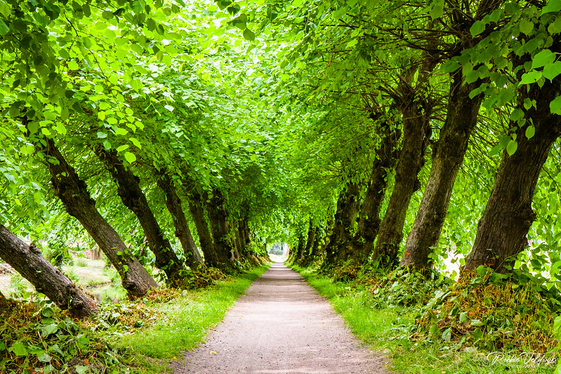

Even tho Amelia lives near a town she is also around a forrest. Her forrest is her best friend. A place of solitude and where she can really be herself without any judgement. She is free to run, sit, and jump without any judgement. Luckily most of the forrest animals like her and her cooking. Even tho she can't understand them, her cooking does all the talking.

"Follow your path" by Robbie Veldwijk Photography is licensed under CC BY-NC-ND 2.0